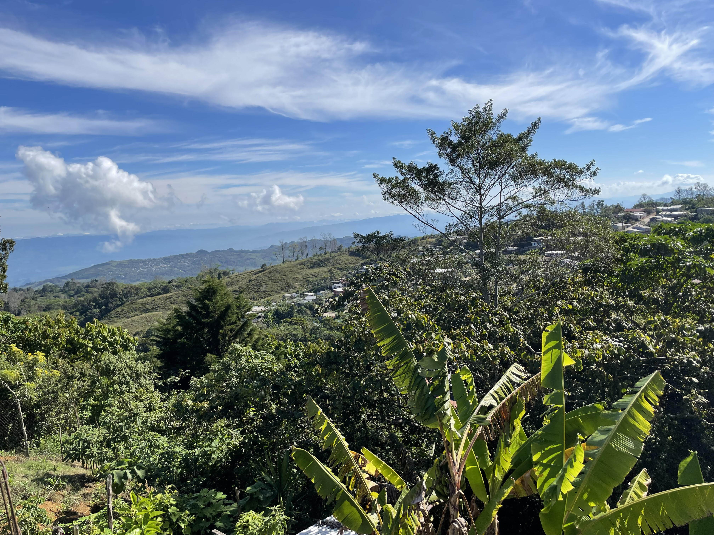

Ch'ol poetry translations
Together with poet and writer Charlotte Friedman, I have been translating the work of Ch'ol poet, Juana Peñate Montejo. Juana Peñate Montejo is a poet, writer and translator from Tumbalá, Chiapas, Mexico who won the Premio de Literaturas Indígenas de América in 2020 for her collection of poetry Isoñil Ja'al/Danza de la Lluvia (Dance of the rain), written in Ch'ol and self-translated to Spanish.

View from Juana Peñate's roof, January 2022, Tumbalá, Mexico.
Charlotte and I have translated Ipusik'al Matye'lum/Corazón de Selva (Heart of a wild land, published in 2013 by Pluralia) as well as Isoñil Ja'al/Danza de la Lluvia (Dance of the rain, to be published this year by the University of Guadalajara).
publications
- Forthcoming. Translation of xCh'ok "Girl" by Juana Peñate in Poetry London.
- 2023 Two Ch'ol poems by Miriam Hernandez, translated by me and Charlotte Friedman in World Literature Today . [link]
- 2023. Translations of two poems by Juana Peñate Montejo. Hayden's Ferry Review. "Dance of the Rain" nominated for Deep Vellum’s Best Literary Translations Anthology 2025 [link]
- 2023. Translations of five poems by Juana Peñate Montejo. On the Seawall. [link]
- 2023. Translations of seven poems by Juana Peñate Montejo. Asymptote. [link]
- 2022. Three Ch'ol poems by Juana Peñate Montejo in translation. Journal of Latina Critical Feminism. [link]
- 2022. Translations of two poems by Juana Peñate Montejo in translation. The Arkansas International. [link]
- 2022. Seven Poems by Juana Peñate in translation from Ch'ol and a Translators' Note. Exchanges published by the University of Iowa. [link]
- 2022. Five Ch'ol poems by Juana Peñate Montejo in translation. North Dakota Quarterly. [link]
- 2022. Translating Ch’ol: A Bridge Between Linguistics and Poetry (Featured Translator's Note) and Three poems in translation in World Literature Today. Print Edition. “I Am the Alphabet,” “This Land, Your World,” “When I Wake” were shortlisted for Deep Vellum’s Best Literary Translations Anthology 2024
- 2021. “Poetry is like the rain, the wind, like walking”: An Interview with Ch’ol Poet Juana Peñate Montejo and Five Poems. Latin American Literature Today. [link]
Juana Peñate Montejo

Juana Peñate Montejo is a Ch’ol poet, writer, translator, educator and cultural promoter from Emiliano Zapata, Tumbalá, Chiapas, Mexico. She has authored several books of poetry in Ch’ol with self-translations in Spanish including Mi nombre ya no es silencio (My name is no longer silence published) by Coneculta in 2002, Ipusik’al Matye’lum/Corazón de Selva (Heart of a wild land), first published by Pluralia in 2013, and most recently Isoñil Ja’al/Danza de la Lluvia (Dance of the rain), which won the 2020 Premio de Literaturas Indígenas de América and will be published this year by the University of Guadalajara.